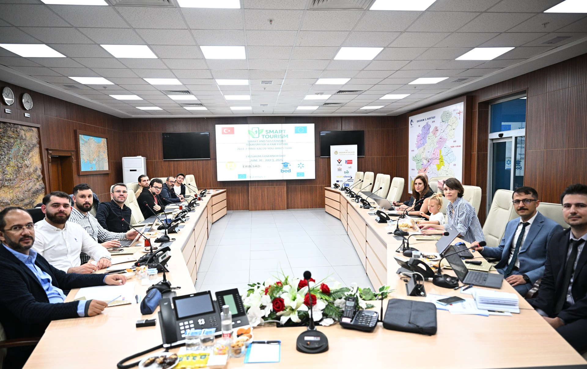

À propos de BRED
Créer des passerellespar l’éducation.
BRED rassemble éducation, inclusion, coopération européenne et innovation pour accompagner les jeunes et les communautés dans leurs parcours.
Notre mission
Faire de l’éducation un point de départ.
BRED utilise l’éducation comme un levier de développement, de participation et de coopération.
Son action relie l’accompagnement éducatif, l’égalité des chances, l’ouverture européenne et la découverte des sciences et du numérique.
Les quatre piliers
Quatre directions.
Un même mouvement.
- 01
Éducation
Accompagnement, apprentissage et développement des compétences.
- 02
Inclusion
Diversité, égalité des chances et participation de publics variés.
- 03
Europe
Coopération, mobilité et projets européens.
- 04
STEM
Science, technologie, innovation et littératie numérique.
Notre manière d’agir
Des idées mises en relation avec le terrain.
Ateliers, activités éducatives, accompagnement, échanges et projets donnent une forme concrète à cette démarche.
- Apprendre
- Transmettre
- Connecter
- Coopérer
Dimension humaine
Derrière BRED, une équipe engagée.
Des profils complémentaires portent les actions éducatives, communautaires, européennes et technologiques de BRED.
Découvrir l’équipeLa mission en action
Les coopérations donnent vie aux idées.
Les projets permettent à BRED de relier ses piliers à des échanges, des apprentissages et des initiatives communes.
Découvrir nos projets